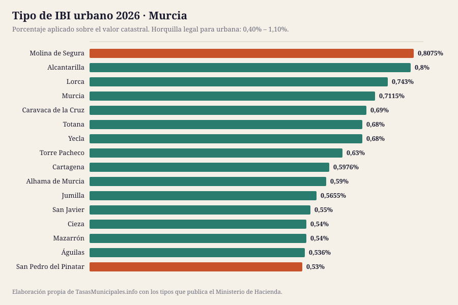
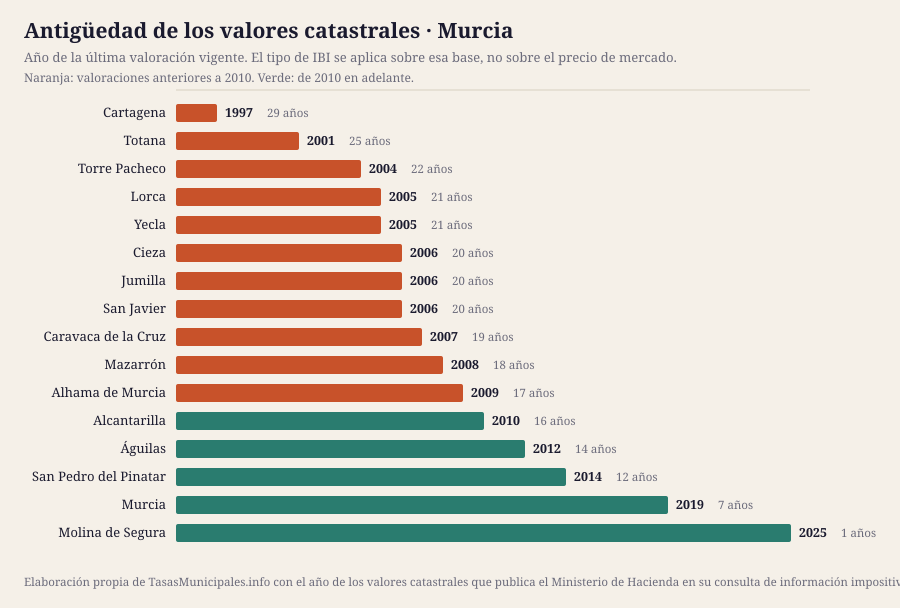

IBI, tasa de basuras y plusvalía en Murcia 2026
Esta guía reúne el IBI, la plusvalía municipal, el impuesto de circulación y las bonificaciones de los 16 municipios de Murcia que cubrimos, con el detalle de cada uno y una tabla para compararlos de un vistazo. Población cubierta: 1.285.600 habitantes.
Lo que cuesta el IBI en Murcia en 2026
El tipo de IBI urbano en Murcia se mueve entre el 0,53% de San Pedro del Pinatar y el 0,8075% de Molina de Segura, con una media de 0,64% en los 16 municipios analizados. Esa horquilla parece pequeña, pero sobre un valor catastral de 50.000 € supone una diferencia de 139 € al año según dónde esté el inmueble: 265 € en San Pedro del Pinatar frente a 404 € en Molina de Segura.
El tipo no lo explica todo: sobre él se aplica el valor catastral, y en Murcia las valoraciones vigentes van de 1997 en Cartagena a 2025 en Molina de Segura. En 11 de los 16 municipios con dato la última valoración es anterior a 2010, así que la base del recibo arrastra el mercado inmobiliario de entonces. El año de los valores de cada municipio está en la tabla, tal y como lo publica el Ministerio de Hacienda.
Aquí no publicamos el importe de la tasa de residuos ni las fechas de cobro de cada municipio: no existe fuente estatal que los recoja y preferimos el hueco a un dato sin respaldo. Lo que sí fija la ley es el plazo por defecto del IBI, del 1 de septiembre al 20 de noviembre cuando la ordenanza no señala otro (art. 62.3 de la Ley General Tributaria). La mecánica general del impuesto está en las guías de IBI 2026, bonificaciones y plusvalía; aquí van los datos de Murcia.
Ficha fiscal de cada municipio
Tabla comparativa: el IBI en los 16 municipios de Murcia
Ordenable por cualquier columna. Todas las cifras salen de la consulta de información impositiva del Ministerio de Hacienda. «Cuota IBI» aplica el tipo de cada municipio a un valor catastral común de 50.000 €; con el de tu recibo, usa la calculadora. «Valores catastrales» es el año de la última valoración vigente, que determina la base sobre la que se aplica el tipo.
| Municipio | Habitantes | IBI urbano | IBI rústico | Cuota IBI (VC 50.000 €) | Valores catastrales | Tipo BICE |
|---|---|---|---|---|---|---|
| Murcia | 479.405 | 0,7115% | 0,7363% | 356 € | 2019 | 1,3% |
| Cartagena | 220.704 | 0,5976% | 0,7% | 299 € | 1997 | 1,3% |
| Lorca | 98.969 | 0,743% | 0,656% | 372 € | 2005 | 1,3% |
| Molina de Segura | 78.458 | 0,8075% | 0,8% | 404 € | 2025 | 0,74% |
| Alcantarilla | 43.876 | 0,8% | 0,71% | 400 € | 2010 | 0,6% |
| Torre Pacheco | 41.479 | 0,63% | 0,63% | 315 € | 2004 | 1,3% |
| Águilas | 37.811 | 0,536% | 0,8% | 268 € | 2012 | 0,832% |
| San Javier | 36.524 | 0,55% | 0,75% | 275 € | 2006 | 0,75% |
| Yecla | 36.453 | 0,68% | 0,63% | 340 € | 2005 | 1,3% |
| Cieza | 35.577 | 0,54% | 0,7% | 270 € | 2006 | 1% |
| Mazarrón | 35.449 | 0,54% | 0,44% | 270 € | 2008 | 1,3% |
| Totana | 33.358 | 0,68% | 0,6% | 340 € | 2001 | 1,3% |
| San Pedro del Pinatar | 29.674 | 0,53% | 0,53% | 265 € | 2014 | 0,53% |
| Jumilla | 27.574 | 0,5655% | 0,678% | 283 € | 2006 | 1,3% |
| Caravaca de la Cruz | 26.126 | 0,69% | 0,79% | 345 € | 2007 | 0,64% |
| Alhama de Murcia | 24.163 | 0,59% | 0,72% | 295 € | 2009 | 0,7% |


Las excepciones del calendario de cobro en la Región de Murcia
Murcia es el caso con el reparto de la recaudación más fragmentado de la guía, y conviene conocerlo antes de buscar un recibo: la Agencia Tributaria de la Región de Murcia (ATRM) publica un calendario del contribuyente único para la recaudación voluntaria de IBI, IAE, impuesto de vehículos y plusvalía de buena parte de los ayuntamientos, pero con dos excepciones que explican por qué las fechas no coinciden entre municipios:
- El municipio de Murcia tiene su propio organismo, la Agencia Municipal Tributaria, con calendario, oficina virtual y padrones propios.
- Águilas, Mazarrón, Molina de Segura, Los Alcázares y San Pedro del Pinatar quedan fuera del calendario general de la ATRM y publican el suyo. Es la propia ATRM la que lo advierte en su calendario del contribuyente, remitiendo al de cada uno de esos municipios.
Consecuencia práctica: no busques «cuándo se paga el IBI en Murcia» como si hubiera una fecha regional. Comprueba primero quién recauda en tu municipio y consulta ese calendario concreto.
Quién gestiona y cobra el IBI en Murcia
El recibo, el calendario y las solicitudes se tramitan donde esté la recaudación, que no siempre es el ayuntamiento:
| Provincia | Municipios en la guía | Organismo de recaudación | Estado del enlace |
|---|---|---|---|
| Murcia | 16 | Agencia Tributaria de la Región de Murcia (ATRM) | responde correctamente |
De ahí que no haya una fecha única para toda Murcia: cada organismo publica su calendario.
¿Dónde se paga más y menos IBI en Murcia?
La mediana del tipo urbano de los 16 municipios de Murcia es del 0,61%, y está en línea con la mediana de los 134 municipios que analizamos en toda España (0,61%).
En el extremo alto está Molina de Segura con el 0,8075%; en el bajo está San Pedro del Pinatar con el 0,53%. Ojo: un tipo alto no significa un recibo alto, porque la cuota es valor catastral × tipo. Ranking nacional →
Quién ha movido el tipo entre 2024 y 2025
En Murcia, 5 municipios han subido el tipo y ningún municipio lo ha bajado; el resto lo mantiene.
| Municipio | 2024 | 2025 | Variación |
|---|---|---|---|
| Molina de Segura | 0,733% | 0,8075% | Sube 0,075 puntos |
| Yecla | 0,65% | 0,68% | Sube 0,030 puntos |
| Águilas | 0,51% | 0,536% | Sube 0,026 puntos |
| Murcia | 0,6881% | 0,7115% | Sube 0,023 puntos |
| San Javier | 0,53% | 0,55% | Sube 0,020 puntos |
ICIO, impuesto de circulación y plusvalía en Murcia
El IBI no es el único tributo que aprueba un ayuntamiento. En Murcia, el ICIO va del 3,2% al 4% (mediana 3,89%); un turismo de 8 a 11,99 CV paga entre 42,85 € y 68,16 € al año; 8 de 16 aplican los coeficientes máximos de plusvalía del art. 107.4 TRLRHL.
| Municipio | ICIO (obras) | IVTM 8–11,99 CV | Plusvalía: tipo máximo | ¿Coeficientes al tope legal? |
|---|---|---|---|---|
| Alcantarilla | 4% | 64,40 € | 30% | No |
| Alhama de Murcia | 3,4% | 42,85 € | 27% | Sí |
| Caravaca de la Cruz | 3,5% | 68,16 € | 30% | No |
| Cartagena | 4% | 61,34 € | 30% | Sí |
| Cieza | 3,5% | 56,05 € | 30% | No |
| Jumilla | 3,27% | 49,08 € | 25% | Sí |
| Lorca | 4% | 66,13 € | 30% | No |
| Mazarrón | 4% | 61,34 € | 30% | No |
| Molina de Segura | 3,9% | 60,51 € | 30% | Sí |
| Murcia | 4% | 68,16 € | 30% | Sí |
| San Javier | 3,9% | 61,34 € | 18% | Sí |
| San Pedro del Pinatar | 3,88% | 61,34 € | 25% | No |
| Torre Pacheco | 3,8% | 57,28 € | 30% | No |
| Totana | 3,2% | 57,94 € | 28% | Sí |
| Yecla | 3,3% | 62,45 € | 28% | No |
| Águilas | 4% | 59,64 € | 30% | Sí |
Fuente: Ministerio de Hacienda. El guion marca lo que la consulta no publica. La tarifa completa del IVTM está en cada ficha.
Guía del impuesto de circulación → · Comparativa del IVTM → · Quién aplica el coeficiente máximo de plusvalía →
Cuándo se revisaron los valores catastrales en Murcia
La cuota del IBI es valor catastral × tipo, así que la fecha de la última valoración colectiva pesa tanto como el porcentaje que vota el pleno. En Murcia la mediana está en 2006, más reciente que la del conjunto de la guía (2005), y 8 de 16 municipios arrastran valores de hace 20 años o más.
| Municipio | Año de la valoración | Antigüedad | Tipo urbano |
|---|---|---|---|
| Cartagena | 1997 | 29 años | 0,5976% |
| Totana | 2001 | 25 años | 0,68% |
| Torre Pacheco | 2004 | 22 años | 0,63% |
| Lorca | 2005 | 21 años | 0,743% |
| Yecla | 2005 | 21 años | 0,68% |
| San Javier | 2006 | 20 años | 0,55% |
| Cieza | 2006 | 20 años | 0,54% |
| Jumilla | 2006 | 20 años | 0,5655% |
| Caravaca de la Cruz | 2007 | 19 años | 0,69% |
| Mazarrón | 2008 | 18 años | 0,54% |
| Alhama de Murcia | 2009 | 17 años | 0,59% |
| Alcantarilla | 2010 | 16 años | 0,8% |
| Águilas | 2012 | 14 años | 0,536% |
| San Pedro del Pinatar | 2014 | 12 años | 0,53% |
| Murcia | 2019 | 7 años | 0,7115% |
| Molina de Segura | 2025 | 1 años | 0,8075% |
Qué es el valor catastral, cómo se consulta y cómo se corrige → · Qué implica una ponencia desfasada →
Población de los municipios de Murcia (2020–2025)
El padrón no cambia el IBI, pero sí explica la tasa de residuos: cuando el coste del servicio se reparte entre menos vecinos, la tarifa sube. En conjunto, los 16 municipios de Murcia que cubrimos han ganado 58.560 habitantes desde 2020 (16 crecen, 0 pierden población).
| Municipio | 2020 | 2025 | Variación | % |
|---|---|---|---|---|
| Murcia | 459.403 | 479.405 | +20.002 | +4,4 % |
| Cartagena | 216.108 | 220.704 | +4.596 | +2,1 % |
| Lorca | 95.515 | 98.969 | +3.454 | +3,6 % |
| Molina de Segura | 73.095 | 78.458 | +5.363 | +7,3 % |
| Alcantarilla | 42.345 | 43.876 | +1.531 | +3,6 % |
| Torre Pacheco | 36.464 | 41.479 | +5.015 | +13,8 % |
| Águilas | 35.722 | 37.811 | +2.089 | +5,8 % |
| San Javier | 33.129 | 36.524 | +3.395 | +10,2 % |
| Yecla | 34.834 | 36.453 | +1.619 | +4,6 % |
| Cieza | 35.283 | 35.577 | +294 | +0,8 % |
| Mazarrón | 32.839 | 35.449 | +2.610 | +7,9 % |
| Totana | 32.529 | 33.358 | +829 | +2,5 % |
| San Pedro del Pinatar | 25.932 | 29.674 | +3.742 | +14,4 % |
| Jumilla | 25.994 | 27.574 | +1.580 | +6,1 % |
| Caravaca de la Cruz | 25.688 | 26.126 | +438 | +1,7 % |
| Alhama de Murcia | 22.160 | 24.163 | +2.003 | +9,0 % |
Fuente: INE, padrón a 1 de enero.

Ficha fiscal de los 16 municipios de Murcia
Cada ficha recoge el detalle de ese ayuntamiento: tipos aprobados, calendario de cobro, bonificaciones, plusvalía y enlaces oficiales donde comprobarlo.
- Murcia — IBI 0,7115% · cuota 356 € con VC de 50.000 € · valores de 2019
- Cartagena — IBI 0,5976% · cuota 299 € con VC de 50.000 € · valores de 1997
- Lorca — IBI 0,743% · cuota 372 € con VC de 50.000 € · valores de 2005
- Molina de Segura — IBI 0,8075% · cuota 404 € con VC de 50.000 € · valores de 2025
- Alcantarilla — IBI 0,8% · cuota 400 € con VC de 50.000 € · valores de 2010
- Torre Pacheco — IBI 0,63% · cuota 315 € con VC de 50.000 € · valores de 2004
- Águilas — IBI 0,536% · cuota 268 € con VC de 50.000 € · valores de 2012
- San Javier — IBI 0,55% · cuota 275 € con VC de 50.000 € · valores de 2006
- Yecla — IBI 0,68% · cuota 340 € con VC de 50.000 € · valores de 2005
- Cieza — IBI 0,54% · cuota 270 € con VC de 50.000 € · valores de 2006
- Mazarrón — IBI 0,54% · cuota 270 € con VC de 50.000 € · valores de 2008
- Totana — IBI 0,68% · cuota 340 € con VC de 50.000 € · valores de 2001
- San Pedro del Pinatar — IBI 0,53% · cuota 265 € con VC de 50.000 € · valores de 2014
- Jumilla — IBI 0,5655% · cuota 283 € con VC de 50.000 € · valores de 2006
- Caravaca de la Cruz — IBI 0,69% · cuota 345 € con VC de 50.000 € · valores de 2007
- Alhama de Murcia — IBI 0,59% · cuota 295 € con VC de 50.000 € · valores de 2009
Preguntas frecuentes sobre el IBI y las tasas en Murcia
¿Qué municipio de Murcia tiene el IBI más alto en 2026?
De los 16 municipios analizados, el tipo urbano más alto es el de Molina de Segura (0,8075%) y el más bajo el de San Pedro del Pinatar (0,53%). Sobre un valor catastral de 50.000 € son 404 € frente a 265 € al año.
¿Cuál es el tipo medio de IBI en Murcia?
La media de los 16 municipios de Murcia que recoge esta guía es del 0,64%, con una mediana del 0,61%. La ley permite moverse entre el 0,40% y el 1,10% en urbana.
¿Cuándo se paga el IBI en Murcia?
No hay una fecha única: la fija cada ordenanza y se aprueba cada ejercicio, por eso no publicamos fechas concretas. Cuando la ordenanza no señala otro plazo se aplica el del artículo 62.3 de la Ley General Tributaria, del 1 de septiembre al 20 de noviembre, y quien lo modifique no puede dejarlo en menos de dos meses. El calendario del año lo publica el organismo que recauda, enlazado en la ficha de cada municipio.
¿Cuánto se paga de basuras en Murcia?
No lo publicamos porque no podemos verificarlo: la tarifa está en la ordenanza fiscal de cada ayuntamiento y ninguna administración estatal las reúne. La Ley 7/2022 obliga desde el 10 de abril de 2025 a cobrar una tasa de residuos específica, diferenciada y no deficitaria (art. 11.3), y solo exige comunicarla a la comunidad autónoma (art. 11.5). En la guía de la tasa de residuos explicamos dónde localizar la tuya.
¿Quién cobra el IBI en Murcia?
En Murcia la recaudación de buena parte de los ayuntamientos corre a cargo de: Agencia Tributaria de la Región de Murcia (ATRM). El resto la lleva su propio ayuntamiento. Cada ficha indica cuál corresponde y enlaza dónde consultar el calendario.
¿Dónde cuesta más el impuesto de circulación en Murcia?
Por un turismo de 8 a 11,99 caballos fiscales, el más caro de Murcia es Caravaca de la Cruz con 68,16 € al año y el más barato Alhama de Murcia con 42,85 €. La cuota mínima que fija la ley es de 34,08 €.
Qué está verificado en esta página
| Dato | Estado en Murcia |
|---|---|
| Tipos de IBI, rústica, BICE y año de los valores catastrales | 16 de 16 contrastados con el Ministerio de Hacienda |
| Webs oficiales de los ayuntamientos | 15 de 16 respondían el 2026-07-25 |
| Tasa de residuos y fechas de cobro | No se publican: las fija cada ordenanza, no hay registro estatal y no hemos podido acceder a una fuente primaria |
Si un dato no coincide con lo que dice tu ayuntamiento, manda la ordenanza publicada en el boletín oficial. Qué fuente respalda cada dato y cómo corregimos → · Avisar de un error
Normativa citada en esta página
- Real Decreto Legislativo 2/2004 (texto refundido de la Ley Reguladora de las Haciendas Locales)
- Real Decreto Legislativo 1/2004 (texto refundido de la Ley del Catastro Inmobiliario)
- Ley 7/2022, de 8 de abril, de residuos y suelos contaminados para una economía circular
- Real Decreto-ley 26/2021, de 8 de noviembre (adaptación del IIVTNU a la jurisprudencia constitucional)
- Sentencia del Tribunal Constitucional 182/2021, de 26 de octubre
- Ley 58/2003, de 17 de diciembre, General Tributaria
- Sede Electrónica del Catastro